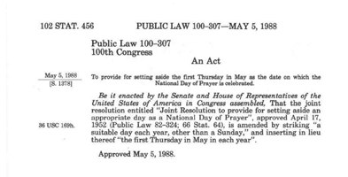
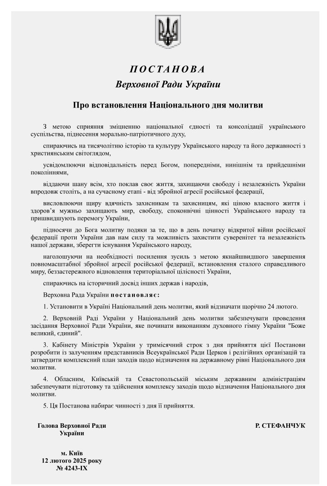

PDF · 24 pages
The Movement’s brochure
The full presentation of the movement: history, legal base, benefits and the seven practical steps, with illustrations.
Download PDFTwo nations have already written a National Day of Prayer into law. Their texts, their procedure and their experience are available to every European country that wishes to follow.
Precedent I
The American tradition of national prayer reaches back to the founding of the republic itself, and was confirmed repeatedly at the most difficult hours of the nation’s history.
One distinction matters for European readers. The United States is a federation: alongside the national government there are fifty individual states, each with its own legislature. The National Day of Prayer is federal — it is set by Act of Congress and proclaimed by the President for the whole country. Individual states and cities issue proclamations of their own, but they do so in addition to the national day, not instead of it.
That is the level at which the European movement works: one day, established for the whole country, by the country’s own parliament or head of state.
The signing
US President Ronald Reagan designated the first Thursday of May as the National Day of Prayer. On this day, US citizens can turn to God in prayer and reflection in churches, in groups and individually.
The act amended the earlier 1952 joint resolution, replacing “a suitable day each year, other than a Sunday” with a fixed annual date — the first Thursday in May — giving the observance a permanent and predictable place in the national calendar.
The change was small in legal terms and decisive in practice. A movable date had left each year’s observance dependent on a fresh presidential decision; a fixed date allowed churches, communities and civic organisations to plan a year ahead, and turned a proclamation into an institution. Every president since has issued the proclamation, and the day is now marked in all fifty states.
For a European parliament considering the same step, the American file is useful precisely because it is short: a single page of statute, amending an earlier resolution, with no financial obligation on the state and no compulsion on any citizen.


Precedent II
Ukraine is the first country in Europe where a law was passed, on 12 February 2025, providing for 24 February — The National Day of Prayer.
The resolution of the Verkhovna Rada establishes the day as an annual national observance, recognising the role of prayer in strengthening the spiritual unity of Ukrainian society and expressing respect for the country’s religious heritage and freedom of conscience.
The date carries its own meaning: 24 February marks the beginning of the full-scale invasion — a day that has become, for millions, a day of remembrance, resilience and prayer for peace.
The day was first observed on 24 February 2025, within days of the resolution being adopted. On its second observance, in 2026, it drew heads of state and government from across Europe to St. Sophia Cathedral in Kyiv — the first official, intergovernmental prayer service of its kind on the continent.
The framework
The road from a first conversation to a date in the national calendar has been walked before. These seven steps summarise what has worked in practice.
Materials
Materials for church leaders, steering committees and parliamentary initiators. Additional documents are provided on request.
The full presentation of the movement: history, legal base, benefits and the seven practical steps, with illustrations.
Download PDFA template resolution text, based on the Ukrainian and American precedents, adaptable to national parliamentary procedure.
Request the templateGuidance on forming an interdenominational committee, sample agendas, and a checklist for the first national observance.
Request the packNext step
Tell us which nation you represent and we will connect you with those who have already taken this road.